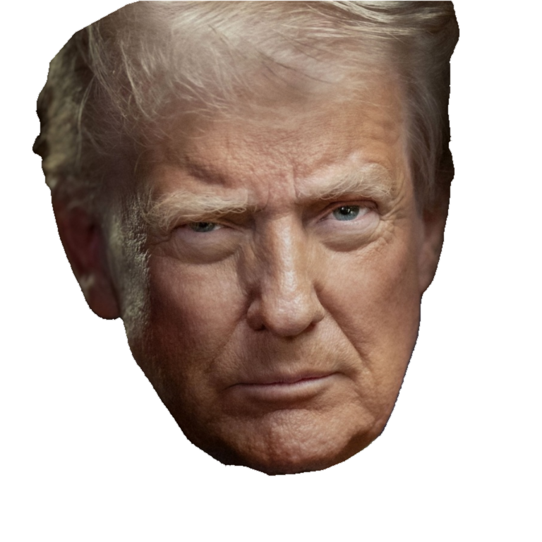
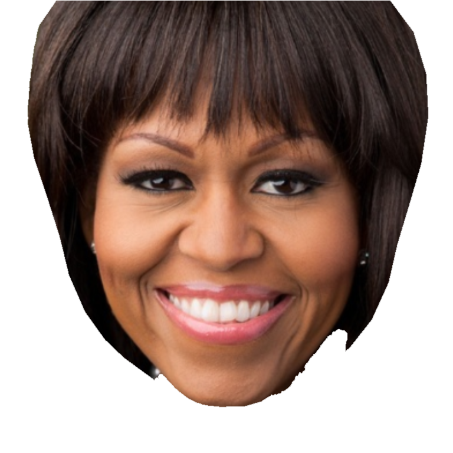
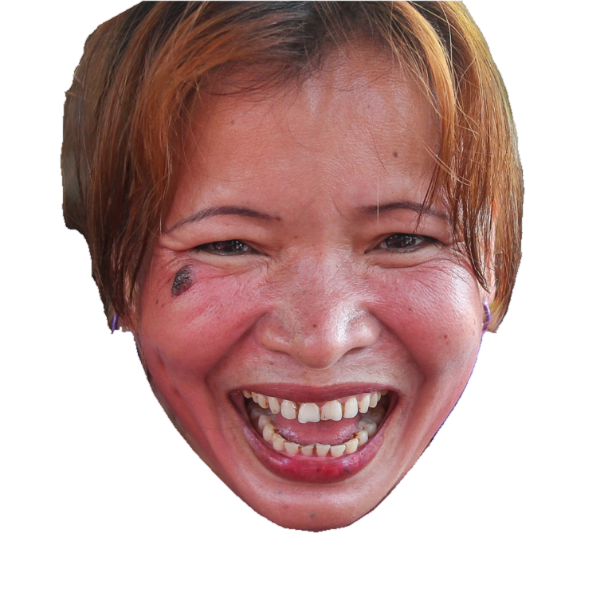
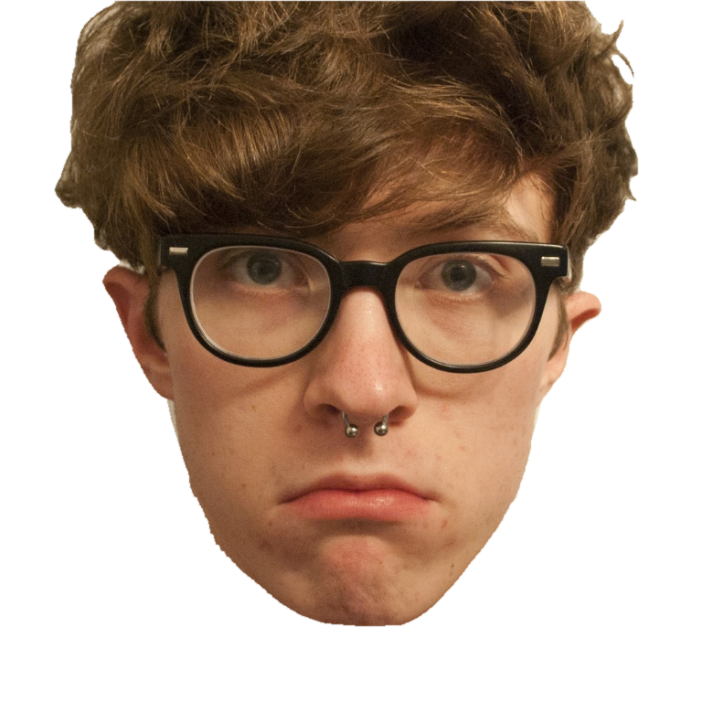
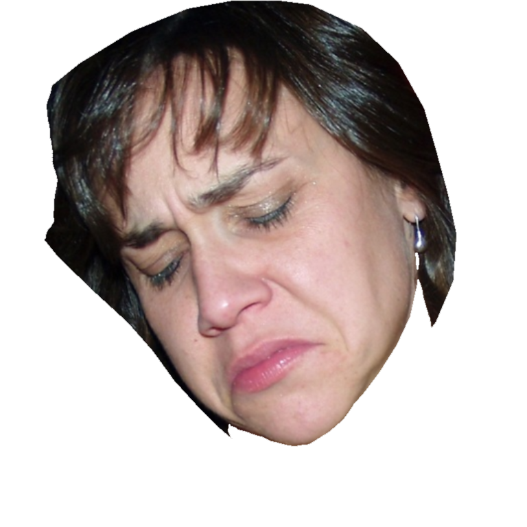
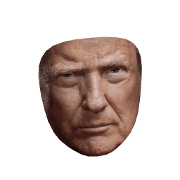
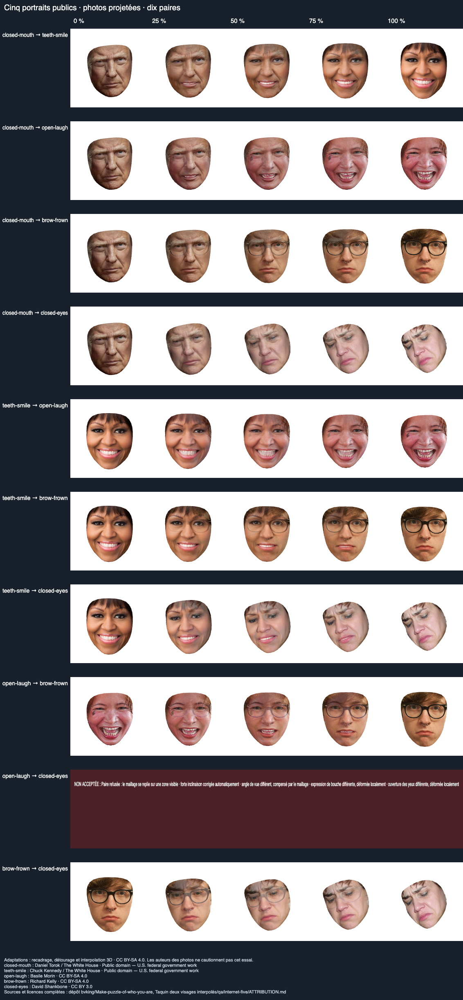
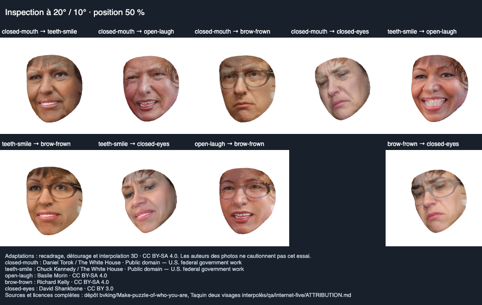

Les cinq photographies sources
Les descriptions portent sur les traits visibles. Les portraits ci-dessous sont les vrais recadrages détourés sur fond blanc utilisés par le programme. Chaque photographie mène à sa page source.
.jpg){kind=link}

Domaine public


Domaine public


CC BY-SA 4.0


CC BY-SA 4.0


CC BY 3.0
De P01 à P03 : forme et expression
Une transition entre deux identités et deux ouvertures de bouche. L'affichage en argile isole la forme de la surface ; les textures photo montrent aussi les difficultés de projection et de mélange.
Le choix s'applique à l'animation et à la planche des dix paires.
P01 ↔ P03
Bouche fermée ↔ bouche ouverte

Les dix combinaisons de visages
La même série de positions intermédiaires permet de comparer les transitions. Ouvrir la planche donne accès à sa résolution complète et aux détails des yeux, de la bouche et du contour.

P03 ↔ P05 reste un échec de ce banc d'essai. Le moteur refuse cette combinaison lorsque sa trajectoire géométrique dépasse les critères de sécurité. Elle reste visible dans le bilan ; elle n'est pas comptée parmi les neuf paires acceptées.
Comment lire les résultats
Ce que les contrôles vérifient
Ils examinent la validité de la trajectoire géométrique et le fonctionnement du rendu. Une paire acceptée peut encore présenter des défauts visibles : dédoublements, étirement des textures ou raccords peu naturels.
Ce que cette surface représente
Le relief est estimé à partir d'une photographie par personne. La surface faciale n'est pas une reconstruction complète du crâne, des cheveux ni des parties cachées. L'argile aide à distinguer un défaut de forme d'un défaut de texture.
Défauts encore visibles dans ces essais
Les lunettes peuvent se dédoubler, les textures de la bouche et des dents se mélangent, et le contour des cheveux reste coupé par la surface ouverte. La rotation révèle aussi des étirements sur les côtés. Ces limites restent à corriger même sur les paires acceptées.
Examiner la surface tournée à 20° / 10°
Cette planche montre chaque paire à 50 %, avec une rotation horizontale de 20° et verticale de 10°. Les parties absentes des photographies ne disposent pas d'une texture observée.

